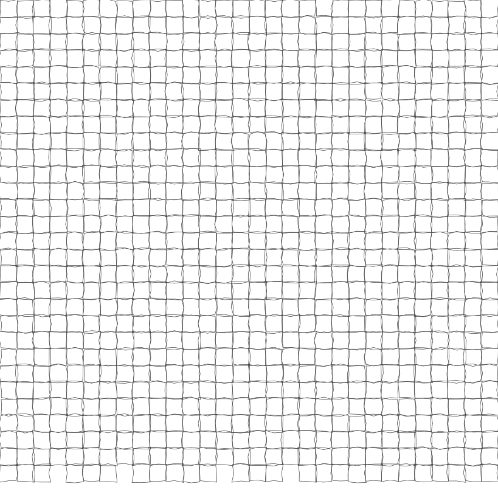

Zhejiang is a land where mountains meet the sea,
and where centuries of cultural heritage coexist with modern innovation.
From misty water towns and dramatic coastal islands
to intangible cultural traditions, historic streets, and vibrant digital cities,
Zhejiang offers a diverse landscape shaped by both history and progress.
Whether it is your first visit or a return to explore further,
every journey reveals a new perspective, inviting travellers to experience
the region through its culture, nature, and everyday life.